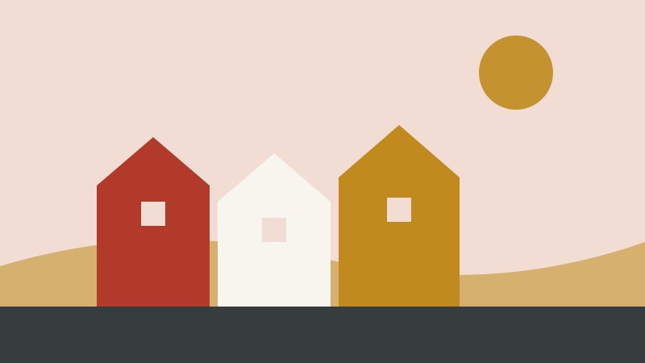

Kanelboller til en regnfull søndag
En oppskrift jeg stadig vender tilbake til.
Dette er en enkel oppskrift som ikke krever noe spesielt utstyr.
Slik gjør du
Elt deigen, la den heve i en time, rull ut, fyll med smør, sukker og kanel, og stek på 225 grader i ti minutter.